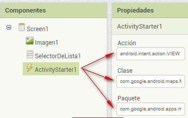

3.8. Mapa Tour
La creación de una aplicación con un mapa completo puede parecer muy complicado, pero App Inventor 2 permite utilizar el componente ActivityStarter con Google Maps para las ubicaciones virtuales que facilitan mucho el trabajo. En primer lugar, construirás una aplicación que muestra vistas de las Casas Colgadas, puente San Pablo y plaza Mayor de Cuenca con un solo clic. A continuación, podrás modificar la aplicación para crear una visita virtual de mapas de satélite de otros monumentos disponibles a partir de Google Maps.
Este tema presenta los siguientes componentes:
- El componente ActivityStarter que permite la ejecución de otras aplicaciones de Android desde su aplicación. Vamos a utilizar este componente para lanzar Google Maps con diferentes parámetros.
- El componente SelectorDeLista para permitir al usuario elegir de una lista de ubicaciones.
Diseño
Para el diseño de la aplicación vamos a utilizar los siguientes elementos:
- Una imagen para personalizar el fondo de la aplicación.
- Del bloque Interfaz de usuario vamos a utilizar el componente SelectorDeLista. Este componente tiene un botón asociado, cuando el usuario hace clic en él se despliega la lista de elecciones. Cambia el texto de este botón ajustando la propiedad Texto a "Elije el destino”.
- Del bloque Conectividad vamos a incluir ActivityStarter, componente no visible.

Definir las propiedades de ActivityStarter
ActivityStarter es un componente que te permite lanzar cualquier aplicación de Android, un navegador, Google Maps, o incluso otra de tus propias aplicaciones.
Vamos a construir la app Tour_Cuenca donde la aplicación Google Maps se lanzará para mostrar mapas particulares basadas en la elección del usuario. El usuario puede pulsar el botón Atrás de su móvil para volver a la aplicación y elegir un destino diferente.
ActivityStarter es un componente relativamente de bajo nivel en el que deberás establecer algunas propiedades. Vamos a definir las propiedades que se especifican en la Tabla, y ten cuidado, incluso las letras mayúsculas / minúsculas son importantes.
| Propiedad | Valor |
| Acción | android.intent.action.VIEW |
| Clase | com.google.android.maps.MapsActivity |
| Paquete | com.google.android.apps.maps |

Bloques
En el Editor de Bloques, deberemos definir una lista de destinos y dos comportamientos:
- Cuando la aplicación se inicia, la aplicación carga los destinos al componente SelectorDeLista para que el usuario pueda elegir uno.
- Cuando el usuario selecciona un destino del SelectorDeLista , la aplicación Maps se inicia y muestra un mapa de este destino.
Creación de una lista de destinos
Abre el Editor de Bloques y crea una variable con la lista de los destinos de Cuenca utilizando los bloques que figuran a continuación:
Screen1.Inicializar se activa cuando la aplicación se inicia. Como se muestra en la siguiente imagen, el controlador de eventos establece la propiedad Elementos de SelectoDeLista1 con los tres destinos que aparecerán.

Encontrar el DataUri de mapas específicos
El primer paso es abrir Google Maps en su ordenador para encontrar los mapas específicos que desea lanzar para cada destino:
- Abrir https://www.google.com/maps
- Búsqueda de un punto de referencia (por ejemplo, las Casas Colgadas).
- Elegir el tipo de vista que deseas (por ejemplo, Dirección, satélite, o Street View). Nosotros vamos a seleccionar la opción StreetView. Una vez realizada la búsqueda del lugar cogemos el muñeco amarillo de la parte inferior derecha de la pantalla y lo colocamos en uno de los puntos azules que aparecen en el mapa, seleccionando aquel que nos muestre una mejor vista del sitio.
5. Hacer clic en Compartir o insertar el mapa y copiar la URL.
Vamos a utilizar esta URL para mostrar el mapa desde la aplicación. En la siguiente lista se muestran las URL que usaremos:
- Casas Colgadas: https://goo.gl/maps/Ae7qhbECFinwg4sz8
- Puente San Pablo: https://goo.gl/maps/5miAmhsFeeT8PTL97
- Plaza Mayor: https://goo.gl/maps/jUPYAmo3wocKHyjJ9
Necesitaremos una lista llamada dataURIs, que contiene una DataURI para cada mapa que deseamos mostrar. Crear esta lista, como se muestra en la imagen para que los elementos que se corresponden a los elementos de la lista de destinos (es decir, la primera dataURI debe corresponder al primer destino, la Torre Eiffel).
Configurar el comportamiento de SelectorDeLista
Cuando el usuario elige un elemento de SelectorDeLista, el evento se activa. El controlador de eventos utiliza esto para encontrar la posición del elemento seleccionado, o el valor del índice, en la lista de destinos.
Por lo tanto, vamos a crear una variable llamada index y la vamos a iniciar con valor 0. Así que, si se elige la primera opción "Casas Colgadas", el índice será 1, si "Puente San Pablo" es elegido, será 2, y si se elige la "Plaza Mayor ", el índice será 3.

Actividad
- Añadir cuatro nuevos monumentos de la provincia a la aplicación.
- Personaliza la aplicación con una imagen representativa de Cuenca. Puedes incluir alguna etiqueta para incluir algún eslogan sobre el turismo en Cuenca.
Obra publicada con Licencia Creative Commons Reconocimiento Compartir igual 4.0